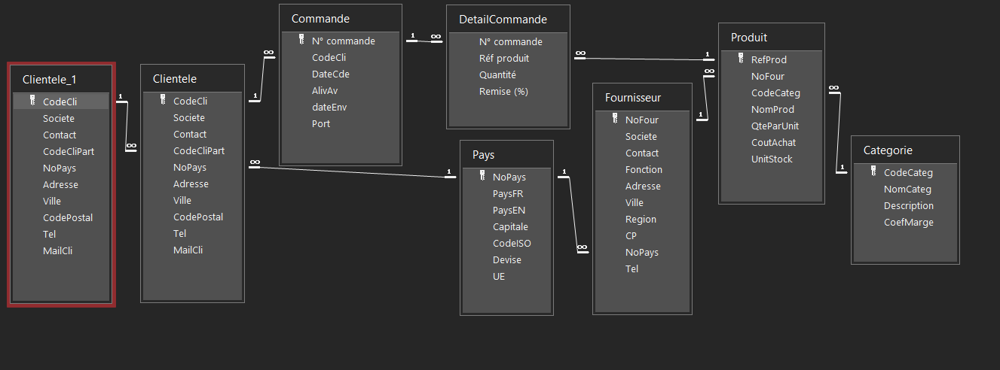

Contexte
KDou achète des produits d’épicerie fine à des fournisseurs du monde entier et les vend à des clients situés en France. Chaque produit appartient à une seule catégorie et à un seul fournisseur. Un client peut passer plusieurs commandes, chacune contenant un ou plusieurs produits.
KDou a aussi mis en relation des clients proches : certains, appelés pilotes, coordonnent un réseau de clients partenaires pour grouper les livraisons.
Schéma de la base de données

| Table | Clé primaire | Clé candidate supplémentaire identifiée | Clés étrangères |
|---|---|---|---|
| Clientele | CodeCli | Non identifiée dans les documents disponibles | NoPays → Pays ; CodeCliPart → Clientele (client pilote) |
| Commande | N° commande | Non identifiée dans les documents disponibles | CodeCli → Clientele |
| DetailCommande | N° commande + Réf produit | Non identifiée dans les documents disponibles | N° commande → Commande ; Réf produit → Produit |
| Produit | RefProd | Non identifiée dans les documents disponibles | NoFour → Fournisseur ; CodeCateg → Categorie |
| Categorie | CodeCateg | Non identifiée dans les documents disponibles | aucune |
| Fournisseur | NoFour | Non identifiée dans les documents disponibles | NoPays → Pays |
| Pays | NoPays | Non identifiée dans les documents disponibles | aucune |
Lecture de la relation entre les clients
La relation entre Clientele.CodeCliPart et Clientele.CodeCli est une relation
réflexive : les deux côtés correspondent à la même table. Dans la fenêtre des relations d’Access, cette
table apparaît deux fois sous les noms Clientele et Clientele_1. Le champ CodeCliPart
de la table Clientele référence le code du client pilote. Il ne faut donc pas compter Clientele_1 comme une
table indépendante.
Prix de vente et chiffre d’affaires
Le prix de vente est le coût d’achat multiplié par le coefficient de marge de la catégorie. Ce coefficient inclut le coût fournisseur, le transport et le stockage.
Le chiffre d’affaires d’une ligne de commande se calcule ainsi : quantité × coût d’achat × coefficient
de marge × (1 − remise). La remise est stockée en fraction (0,05 pour 5 %). Les frais de port ne sont
pas comptés dans le chiffre d’affaires des produits.
Méthode de travail sous Access
- Chaque requête est écrite en mode SQL d’Access, puis exécutée sur la base de la SAÉ.
- Chaque résultat est une capture d’écran de la feuille de données Access, présentée avec sa requête.
- Une requête peut en utiliser une autre : l’indicateur de partenariat s’appuie sur une requête enregistrée qui compte les commandes de chaque client.
- Les doublons sans intérêt sont supprimés avec DISTINCT, et les résultats sont triés avec ORDER BY.
Organisation du site
Les fichiers statiques sont regroupés dans le dossier assets/. Le sous-dossier
assets/css/ contient la feuille de style et assets/images/ contient le schéma
relationnel et les captures des résultats. Cette séparation permet de retrouver plus facilement les fichiers
selon leur rôle.
Une seule feuille de style, assets/css/style.css, est utilisée par toutes les pages afin de
conserver la même charte graphique. Le menu de navigation reprend les mêmes liens et le même ordre sur les
sept pages, ce qui facilite le déplacement dans le rapport.